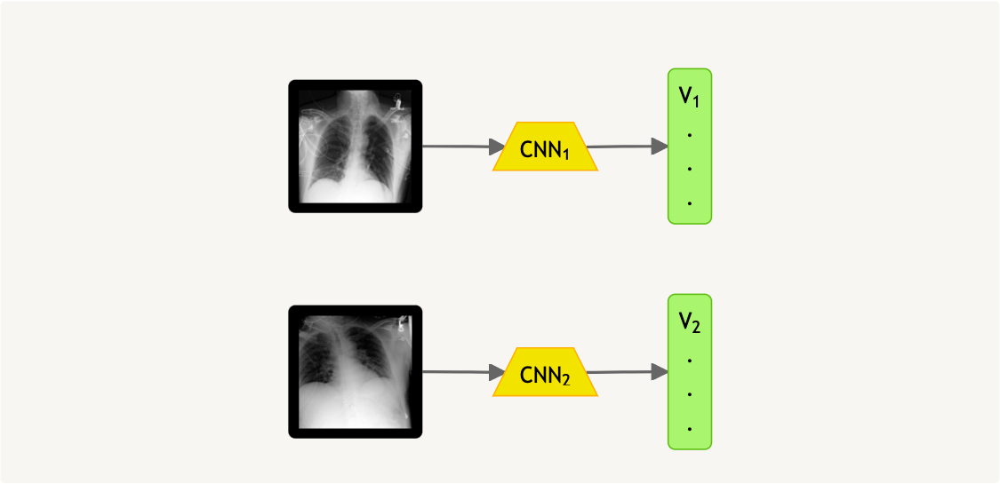
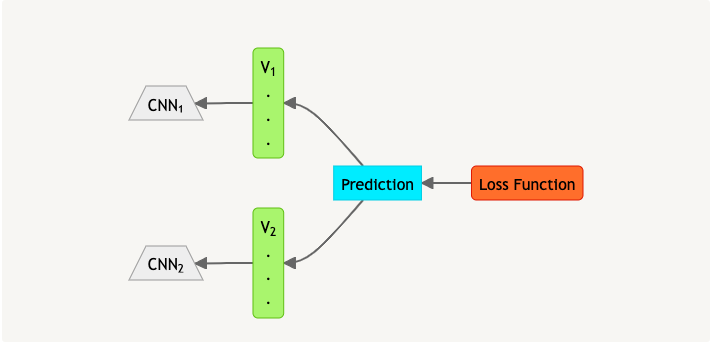
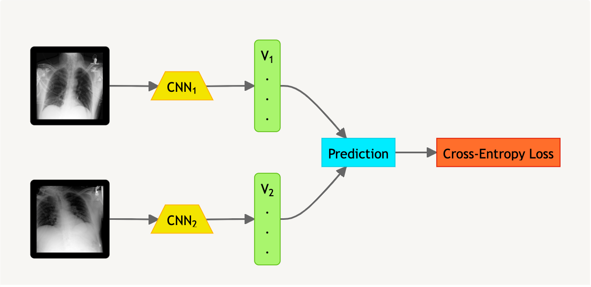
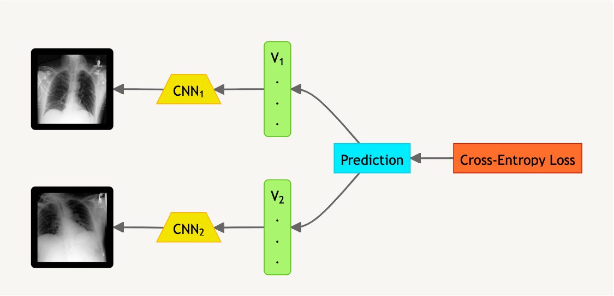
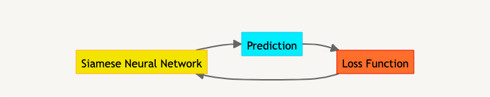
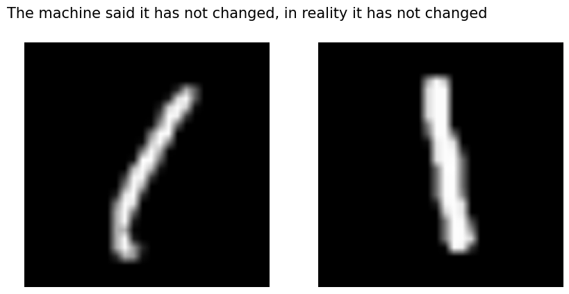
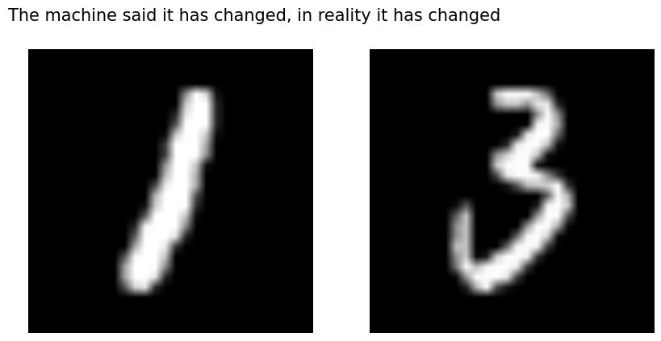

Troy Serapio • August 6, 2023
Siamese neural networks, also called twin neural networks, are really helpful in most machine learning tasks that include the comparison of two objects. This architecture is commonly used in image comparison tasks such as facial recognition, and temporal characterizations. With siamese networks, it becomes possible to detect changes between a series of patient’s chest X-rays (CXRs). For this article, we will focus on the progression of pleural effusion among patients as an example. We will use ImaGenome's labels from the MIMIC-CXR dataset, which is a collection of temporal series of CXR images with descriptions.
What are Siamese neural networks, exactly?
Siamese neural networks are two parallel and identically-weighted neural networks that take in two (different) input vectors per network. In our use case, these input vectors two CXR images.


These input vectors are then fed into their respective convolutional neural networks, and the neural networks generate two separate embeddings (vectors that are far easier to compare to each other). This could be thought of as the model outputting its own version of the original input.

Figure 1: Input to embedding
The special part about siamese networks is the part where these output vectors are compared against each other to come up with a prediction (eg. whether or not a change was detected). This prediction is then trained on a loss function (cross-entropy loss). The reversed arrows emphasize the data retraining itself by going back from the loss function until the first layer of the CNN. This could be thought of as the model learning how to make its own version of the original input.

Figure 2: Backing down from the loss function
This mechanism allows for the model to form a prediction based on two (or more) separate inputs. In fact, by simply adding more parallel and identically-weighted neural networks, we could take in even more inputs. However, this also gets computationally-heavy, so models currently in use tend to use networks that take in two inputs. Now that we understand the essence of Siamese neural networks, we can finally implement them!
Implementing Siamese neural networks
Setting-Up The Environment
I used PyTorch for the implementation of Siamese Neural Networks as PyTorch has models specifically trained on X-ray images (PyTorchXRayVision). PyTorch is also very easy to use. I also used colab.research.google.com as the environment, but any Jupyter-like software would be fine.
Preprocessing The Images
After setting-up PyTorch, we then need to have data to train the model on. In this case, I will use the ImaGenome dataset. Here is the link to the Google Drive of the preprocessed dataset. From here, all we need to do is read the files in the dataset. We would convert these files into pandas.DataFrames to make it very convenient to access the data from these files.
In addition, it would be far more convenient to store these DataFrames as a Dataset object, which is something we would have to implement by ourselves. Note that for this task, we would need to turn the images from the ImaGenome dataset into grayscale as the model that we will use can only process grayscale images.
Siamese neural network implementation
Forward Propagation
First, the model takes in two images (A and B), which will go through two identical and parallel convolutional neural networks (CNN). The two outputs of the CNN are then combined, thus generating the model’s prediction. This is called forward propagation, wherein the data is passed on to the next layer of the neural network. To actually implement this in Python is not too difficult. We would store this architecture in a Python class called SiameseNetwork.

Figure 3: Forward propagation
Backward Propagation
From there, the output is passed through a loss function, which in turn retrains the model. The loss function calculates how well the model did by comparing the generated output to the “correct” output. This is called backward propagation, wherein the model traces back its steps to see where it went wrong. This leads us to training and testing the model.

Figure 4: Back propagation
Training and Testing The Model
Training
Training would be giving the model a multitude of CXR images, and then performing the forward and backward propagation processes repeatedly until it learns to output correct predictions. It is able to learn to do so with an “optimizer” (which follows the loss function) tweaking and readjusting the neural network’s weights until it is able to generate a correct prediction for most samples. You can imagine this as a teacher assisting a student based on their score on a test.

Figure 5: Training
Testing
Testing would be giving the model a multitude of CXR images, then seeing how close the model is to correctly predicting the right answer. You can imagine this as a teacher giving a quiz to a student, and seeing how well the student performs.
Output Discussion
| Dataset used | Accuracy | Average loss |
|---|---|---|
| ImaGenome Labels | 54% | 0.173 |
| MNIST Dataset | 94.2% | 0.0426 |
Here we may see that the Siamese neural networks' accuracy is almost a coin flip. In reality, this is due to the fact that it seems to always overgeneralize into always assuming that the CXR image is in the “no change” category.


However, upon further investigation, this is somewhat a problem with the dataset which could be theoretically resolved by having more training data, or a better architecture. This is what I thought of when training the same model with the MNIST dataset, which performed astoundingly better in detecting whether or not a pair of handwritten digits are both 1s or not.


MNIST Example
Another problem with CXR images and their description is its complexity with the many different organs that may influence the result, thus making it a much harder task. In addition to that, radiologists may sometimes disagree with their results, with one saying “nothing significant changed” while another saying otherwise. Despite that, especially with the MNIST dataset, we can tell just how powerful Siamese neural networks can be in these types of machine learning task.
Last Words
In conclusion, siamese neural networks offer a promising approach to detecting changes and tracking progress in medical imaging, especially in chest X-rays.
This powerful technology can help medical professionals identify and intervene in conditions such as pleural effusion and other pathologies, perhaps even before they become symptomatic.
The future of medical imaging with artificial intelligence is bright, and we are only scratching the surface of what is possible.
Thank you very much for reading!
Resources and Links
- ImaGenome Dataset
- MNIST Dataset
- GitHub Repository on Siamese Neural Networks
- ADL4CV:DV Lecture on Siamese Networks
.